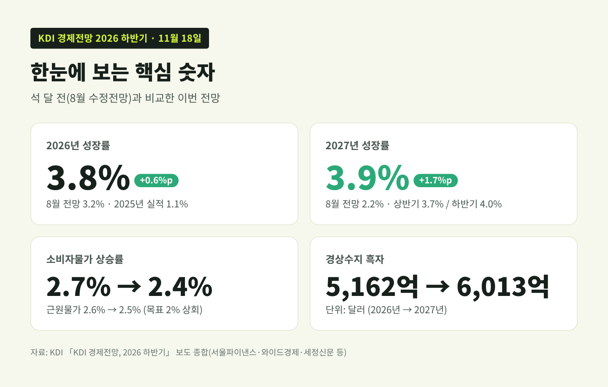
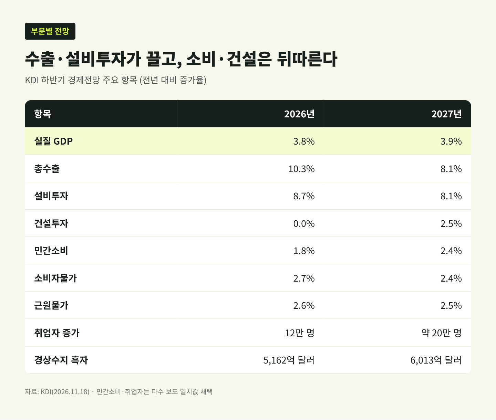
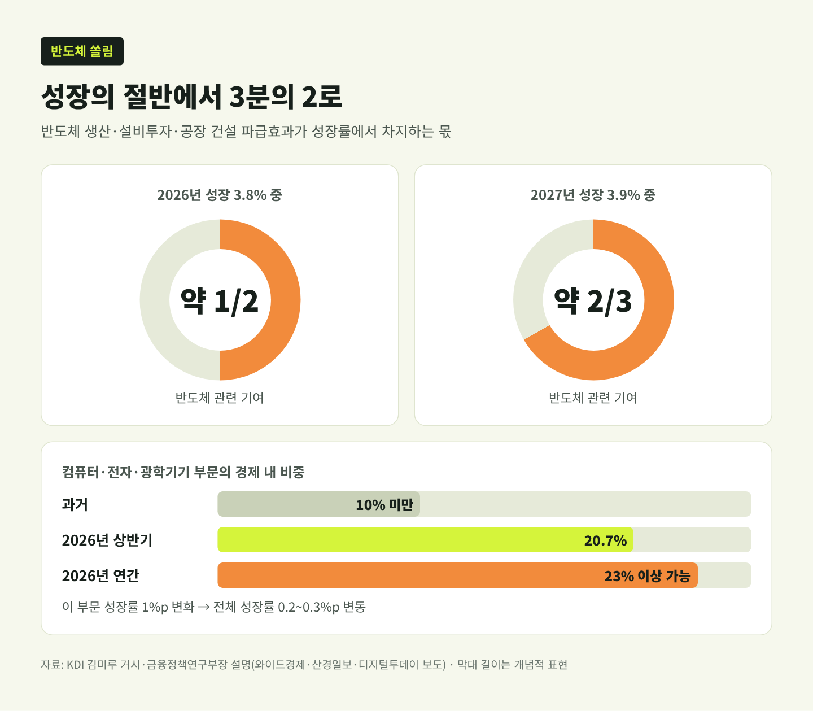
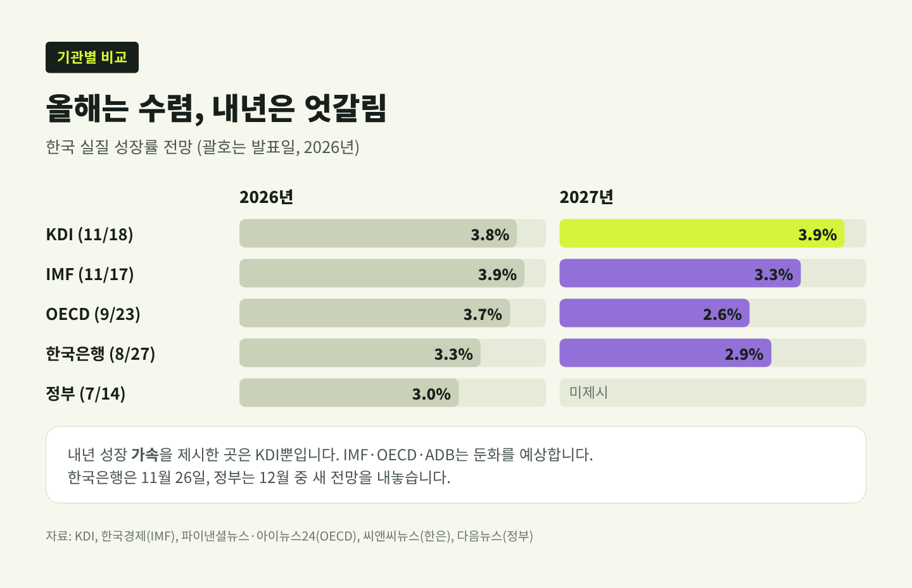
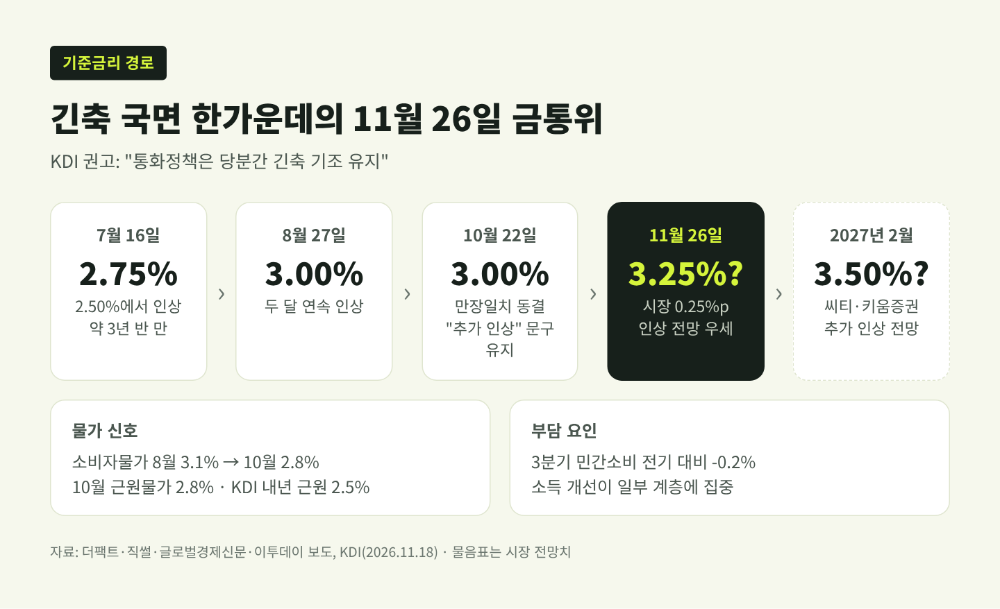

KDI 내년 성장률 3.9% 상향 전망, 반도체가 성장의 3분의 2 차지

이번 글에서는 11월 18일 발표된 KDI 하반기 경제전망을 정리해 보겠습니다. 숫자만 보면 반가운 소식입니다. 다만 그 숫자가 어디서 나오는지, 누구의 체감과 맞닿아 있는지는 따로 살펴볼 필요가 있습니다.
세 줄 요약
- KDI가 올해 성장률 전망을 3.2%에서 3.8%로, 내년은 2.2%에서 3.9%로 크게 올렸습니다.
- 반도체가 올해 성장의 약 절반, 내년 성장의 약 3분의 2를 설명합니다. 소비·고용은 그만큼 따라오지 못합니다.
- KDI는 물가가 내년에도 목표를 웃돈다며 통화 긴축 기조 유지를 권고했습니다. 11월 26일 금통위를 앞둔 신호입니다.
■ 무슨 일이 있었나 — 석 달 만에 1.7%p 올린 내년 전망
한국개발연구원(KDI)은 18일 정오 「KDI 경제전망, 2026 하반기」를 내놓았습니다. 올해 실질 성장률은 3.8%입니다. 8월 수정전망 3.2%보다 0.6%p 높습니다. 내년은 3.9%로, 8월의 2.2%에서 1.7%p나 올렸습니다.
국책연구기관이 석 달 만에 내년 전망을 이만큼 고치는 일은 흔치 않습니다. 김지연 KDI 경제전망실 전망총괄은 8월에도 반도체 가격과 물량이 크게 늘 것으로 봤지만, 실제 실적이 그 예상마저 웃돌았다는 취지로 설명했습니다.
흐름을 놓고 보면 변화가 더 선명합니다. 작년 성장률은 1.1%였습니다. KDI는 올해 5월만 해도 2%대 중반을 내다봤고, 8월 3.2%를 거쳐 이번에 3.8%까지 왔습니다. 내년 3.9%는 올해보다 0.1%p 높은 수치입니다. 반기로 나누면 상반기 3.7%, 하반기 4.0%로 갈수록 가팔라지는 그림입니다.

■ 부문별로 보면 — 수출·설비투자가 끌고, 소비·건설은 뒤따른다
세부 전망은 성장의 무게중심이 어디에 있는지 보여줍니다.
- 총수출: 올해 10.3%, 내년 8.1% 증가
- 설비투자: 올해 8.7%, 내년 8.1% 증가
- 민간소비: 올해 1.8%, 내년 2.4% 증가
- 건설투자: 올해 0.0%, 내년 2.5% 증가
- 취업자: 올해 12만 명, 내년 약 20만 명 증가
- 경상수지 흑자: 올해 5,162억 달러, 내년 6,013억 달러
수출과 설비투자는 두 해 연속 8% 이상 늘어납니다. 반면 민간소비는 1%대 후반에 머물다 내년에야 2%대로 올라섭니다. 건설투자는 올해 제자리입니다. 지방 주택경기 침체가 발목을 잡았고, 내년에는 반도체 공장 같은 비주거용 건축과 관련 플랜트 공사가 회복을 이끌 것으로 KDI는 봤습니다.
물가는 소비자물가 기준 올해 2.7%, 내년 2.4%입니다. 식료품·에너지를 뺀 근원물가는 올해 2.6%, 내년 2.5%로 2% 중반에 머뭅니다. 유가와 환율이 내려가며 압력이 줄겠지만, 바닥의 물가 흐름은 쉽게 식지 않는다는 뜻입니다.

■ 왜 중요한가 — 성장의 3분의 2가 한 산업에서 나온다
이번 전망에서 가장 눈여겨볼 대목은 숫자의 크기보다 구성입니다. KDI는 반도체 생산, 관련 설비투자, 공장 건설 같은 파급효과가 올해 성장률의 약 절반, 내년 성장률의 약 3분의 2를 설명한다고 분석했습니다. 내년 3.9% 가운데 2.6%p 안팎이 반도체 몫이라는 계산이 나옵니다.
경제 구조도 빠르게 바뀌고 있습니다. 김미루 KDI 거시·금융정책연구부장에 따르면 컴퓨터·전자·광학기기 부문이 경제에서 차지하는 비중은 원래 10%에 못 미쳤습니다. 올해 상반기에는 20.7%로 뛰었고, 연간으로는 23%를 넘길 수 있다고 합니다. 범용 D램 가격이 올해 "800%, 900%까지도" 올랐다는 설명도 덧붙였습니다.
이 부문의 실질성장률이 1%p만 흔들려도 전체 성장률은 0.2~0.3%p 움직일 수 있습니다. KDI 스스로도 "반도체 의존도가 높아지면서 글로벌 AI 인프라 투자 추이에 따라 경제성장률의 변동성이 크게 확대될 수 있다"고 짚었습니다(산경일보 인용).
예전에는 반도체가 '한 축'이었습니다. 지금은 성장의 대부분을 혼자 짊어지는 '기둥'에 가깝습니다. 호황기에는 든든하지만, 업황이 꺾이면 성장률이 한꺼번에 무너질 수 있는 구조이기도 합니다.

■ 체감경기와의 괴리 — 성장률은 오르는데 지갑은 왜 그대로인가
성장률 3%대 후반이라는 말이 실감 나지 않는 분이 많을 것입니다. 그 감각은 통계로도 확인됩니다. 3분기 GDP는 전기 대비 1.0% 늘었지만 민간소비는 0.2% 줄었습니다. 설비투자가 반도체 장비를 중심으로 4.1% 늘어난 것과 대조적입니다.
KDI가 지난 12일 낸 분석이 이 간극을 설명합니다. 반도체 호황은 올해 민간소비에 거의 영향을 주지 못했고, 내년에야 증가율을 약 0.6%p 높일 것으로 추정됐습니다. 반대로 중동 정세로 인한 유가 상승은 올해 소비 증가율을 약 0.4%p 깎았습니다. 호황의 온기는 1년쯤 늦게 오고, 유가 충격은 곧바로 온다는 것입니다.
더 근본적인 문제는 분배 경로입니다. 반도체 호황의 혜택은 수출기업의 임금, 성과급, 배당을 거쳐 일부 가계로 먼저 흘러갑니다. 김미루 부장은 소득 증가가 특정 계층에 집중되면서 체감경기와 전체 성장률 사이에 차이가 날 수 있다고 했습니다. 김지연 총괄도 소비 총량은 늘겠지만, 어떤 소비가 늘어나느냐에 따라 소상공인의 체감 개선은 불확실하다고 말했습니다.
고용도 같은 이야기를 합니다. 취업자 증가는 올해 12만 명에 그칩니다. 성장률이 3%대 후반인 해치고는 적은 숫자입니다. KDI는 산업별·계층별 격차가 이어질 것으로 보면서도, 경제 전반을 겨냥한 대규모 수요 진작책보다는 비반도체 부문의 생산성을 높이는 쪽을 해법으로 제시했습니다.
■ 다른 기관과 비교하면 — 올해는 수렴, 내년은 엇갈림
올해 성장률은 기관마다 비슷한 수준으로 모였습니다. 전날 연례협의 결과를 발표한 국제통화기금(IMF)은 3.9%, 9월 경제협력개발기구(OECD) 중간전망은 3.7%였습니다. 한국은행은 8월에 3.3%를 제시했고, 정부는 7월 하반기 경제성장전략에서 3.0%를 내놓은 바 있습니다. 두 곳 모두 이후 실적이 전망을 웃돌았습니다.
갈리는 지점은 내년입니다. KDI는 3.9%로 올해보다 더 높게 봤습니다. IMF는 3.3%, 한은 8월 전망은 2.9%, OECD 9월 전망은 2.6%였습니다. 아주경제 보도에 따르면 IMF·OECD·아시아개발은행(ADB)은 모두 내년 둔화를 예상합니다. 가속을 점친 곳은 KDI가 사실상 유일합니다.
차이는 반도체 사이클을 얼마나 길게 보느냐에서 나옵니다. OECD는 내년 민간소비 증가세가 완만해진다며 성장률을 낮춰 잡았습니다. KDI는 반도체 가중치를 높이고, 호황의 소득 효과가 내년 소비로 번진다고 봤습니다. 어느 쪽이 맞을지는 결국 글로벌 AI 투자가 내년에도 지금 속도를 유지하느냐에 달려 있습니다.

■ 11월 26일 금통위에 주는 신호 — "긴축 기조 유지"
KDI는 정책 권고에서 통화정책에 분명한 방향을 제시했습니다. 기조적 물가 상승률이 내년에도 2% 목표를 상당 폭 웃돌 것이라는 이유에서입니다. 김미루 부장은 "통화정책은 당분간 긴축 기조를 유지하는 것이 좋겠다"고 말했습니다(서울파이낸스 인용).
한국은행은 이미 긴축 국면에 있습니다. 7월 16일 기준금리를 2.50%에서 2.75%로 올렸고, 8월 27일에는 3.00%로 한 번 더 올렸습니다. 10월에는 동결하면서 "추가 인상의 시기와 속도"라는 문구를 남겼습니다. 소비자물가는 8월 3.1%에서 10월 2.8%로 내려왔지만, 10월 근원물가는 2.8%로 여전히 높습니다.
전날 IMF도 물가 압력이 굳어지지 않도록 추가 통화 긴축이 적절하다고 권고했습니다. 시장에서는 11월 26일 금통위에서 0.25%p 올려 3.25%로 갈 것이라는 전망이 우세합니다. 씨티와 키움증권은 내년 2월 3.50%까지 한 번 더 오를 것으로 봤습니다. KDI가 '추가 인상'을 직접 언급한 것은 아닙니다. 다만 성장률 상향과 물가 경계를 함께 내놓은 만큼, 인상 쪽에 힘을 싣는 근거로 읽힐 가능성이 큽니다.
다만 부담도 있습니다. 3분기 민간소비가 뒷걸음질했고, 그 회복이 반도체 소득에 기대고 있습니다. 금리가 더 오르면 반도체와 거리가 먼 가계와 소상공인이 먼저 무게를 느낍니다. 재정에 대해서도 KDI는 물가를 자극하지 않도록 유연하게 운용하고, 반도체발 법인세가 계속 들어온다는 가정에 기댄 '되돌리기 어려운 지출'은 신중하라고 주문했습니다. 내년 예산안 총지출이 820조 9,000억 원으로 12.8% 늘어난 상황과 맞물린 권고입니다.

■ 앞으로의 전망 — 숫자를 흔들 변수들
KDI가 꼽은 하방 위험은 크게 두 가지입니다. 하나는 글로벌 AI 인프라 투자의 급랭입니다. 미국 AI 데이터센터 건설이 늦어지거나 빅테크의 자금 조달 여건이 나빠지면 성장률이 크게 떨어질 수 있습니다. 다른 하나는 중동 정세입니다. 에너지 수급 차질이나 유가 재상승은 올해처럼 소비를 바로 깎습니다.
상방 요인도 있습니다. 주요 AI 기업의 수익성이 좋아지고, 국내 반도체 공급 능력이 예상보다 빨리 늘면 전망을 웃돌 수 있다고 KDI는 봤습니다.
당분간 지켜볼 일정은 이렇습니다.
- 11월 26일: 한국은행 금통위 기준금리 결정과 수정 경제전망
- 12월 중: 정부 2027년 경제성장전략(성장전망 발표 연 3회 체제로 개편)
- 내년 1월: IMF 이사회의 연례협의 보고서 논의
한은과 정부가 내년 전망을 KDI의 3.9% 쪽으로 붙일지, IMF·OECD처럼 둔화 쪽에 둘지가 첫 관전 포인트입니다.
정리하면 이렇습니다. KDI의 이번 전망은 한국 경제가 반도체 덕에 2년 연속 3%대 후반 성장을 이어갈 수 있다는 낙관입니다. 동시에 그 성장의 3분의 2가 한 산업에 걸려 있다는 경고이기도 합니다.
— 성장률이 오르는 것과 모두의 형편이 나아지는 것은 같은 말이 아닙니다.
내년 이맘때 3.9%라는 숫자를 다시 꺼내 본다면, 그 숫자가 얼마나 넓게 퍼졌는지를 함께 묻고 싶습니다.
이 글은 공개된 전망·보도를 바탕으로 한 정보 제공 목적이며, 특정 금융상품이나 투자에 대한 권유가 아닙니다. 투자 판단은 본인의 책임 아래 신중히 하시기 바랍니다.
참고 출처
- KDI 한국개발연구원, 「KDI 경제전망, 2026 하반기」 (2026-11-18) — https://www.kdi.re.kr/research/economy
- KDI 현안분석, 「최근 반도체 호황과 유가 상승이 민간소비에 미치는 영향」 (2026-11-12) — https://www.kdi.re.kr/research/analysisView?art_no=3829
- 세정신문 (2026-11-18) — https://www.taxtimes.co.kr/news/article.html?no=277801
- 와이드경제 (2026-11-18) — https://www.widedaily.com/news/articleView.html?idxno=304057
- 디지털투데이 (2026-11-18) — https://www.digitaltoday.co.kr/en/view/127467/kdi-raises-2027-south-korea-growth-forecast-to-3-9-percent-two-thirds-from-semiconductors
- 서울파이낸스 (2026-11-18) — https://www.seoulfn.com/news/articleView.html?idxno=643221
- 아주경제 (2026-11-18) — https://www.ajunews.com/view/20261118110333658
- 산경일보 (2026-11-18) — https://www.sankyungilbo.com/news/articleView.html?idxno=540161
- 정보통신신문 (2026-11-18) — https://www.koit.co.kr/news/articleView.html?idxno=209981
- 재경일보 (2026-11-18) — https://news.jkn.co.kr/post/1104467
- 한국경제, IMF 연례협의 결과 (2026-11-17) — https://www.hankyung.com/article/2026111718967
- 이투데이, 씨티 금리 전망 (2026-11-17) — https://www.etoday.co.kr/news/view/2649268
- 글로벌경제신문, 우리금융연 금통위 전망 (2026-11-09) — https://www.getnews.co.kr/news/articleView.html?idxno=886539
- 직썰, 11월 금리인상 전망 (2026-11-04) — https://www.ziksir.com/news/articleView.html?idxno=151825
- 아이뉴스24, IMF 연례협의 쟁점 (2026-11-02) — https://www.inews24.com/view/2021691
- 정책브리핑, 3분기 GDP 속보 (2026-10-27) — https://www.korea.kr/news/policyNewsView.do?newsId=148974354
- 경향신문, 3분기 GDP (2026-10-27) — https://khan.co.kr/article/202610271630001
- 아이뉴스24, OECD 중간전망 (2026-09-23) — https://www.inews24.com/view/2008986
- 파이낸셜뉴스, OECD 중간전망 (2026-09-23) — https://fnnews.com/news/202609231638253753
- 씨앤씨뉴스, 한은 8월 경제전망 (2026-08-30) — https://www.cncnews.co.kr/mobile/article.html?no=11193
- 더팩트, 한은 기준금리 3.00% 인상 (2026-08-27) — https://news.tf.co.kr/read/economy/2358538.htm
- 다음뉴스, 정부 하반기 경제성장전략 (2026-07-14) — https://v.daum.net/v/20260714165409811